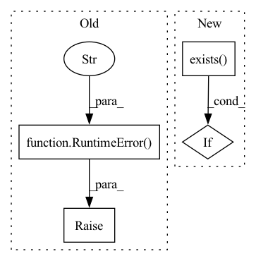

Pattern ID :2084
Before Change
if not self.query_dir.exists():
raise RuntimeError(f"{self.query_dir} is not available")
if not self.gal_dir.exists():
raise RuntimeError(f"{self.gal_dir} is not available" )
@staticmethod
def download():
Download Market1501 dataset.After Change
if not self.dataset_dir.exists():
raise RuntimeError(f"{self.dataset_dir} does not exist")
for dataset_path in self.path_by_type.values():
if not dataset_path.exists() :
raise RuntimeError(f"{dataset_path} does not exist")
In pattern: SUPERPATTERN
Frequency: 3
Non-data size: 4
Instances Fragment ID: 9063930
Project Name: intel/openfl
Commit Name: 8b7e6357cf153411351d96d2b4f21f871cf3a6a7
Time: 2021-11-01
Author: 76171391+aleksandr-mokrov@users.noreply.github.com
File Name: openfl-tutorials/interactive_api/PyTorch_Market_Re-ID/envoy/market_shard_descriptor.py
M Class Name: MarketShardDescriptor
N Class Name: MarketShardDescriptor
M Method Name: _check_before_run(1)
N Method Name: _check_before_run(1)
M Parent Class: ShardDescriptor
N Parent Class: ShardDescriptor
M File Name: openfl-tutorials/interactive_api/PyTorch_Market_Re-ID/envoy/market_shard_descriptor.py
N File Name: openfl-tutorials/interactive_api/PyTorch_Market_Re-ID/envoy/market_shard_descriptor.py
M Start Line: 107
M End Line: 114
N Start Line: 132
N End Line: 134
Before Change
if True:
return False
else:
raise RuntimeError(f"Failed to check existence of key {key} "
f"due to error {reply.status.message}" )
def kv_keys(self, prefix: bytes,
namespace: Optional[str]) -> List[bytes]:After Change
logger.debug(f"internal_kv_exists {key} {namespace}")
key = _make_key(namespace, key)
try:
count = self._redis_client.exists( key)
if count > 0:
return True
return False
except Exception: Fragment ID: 9063928
Project Name: oap-project/cloudtik
Commit Name: 55ff431a9ea272084fb74061e36e5f57cb6cde62
Time: 2022-01-05
Author: jerrychenhf@yahoo.com
File Name: python/cloudtik/core/_private/control_state.py
M Class Name: StateClient
N Class Name: StateClient
M Method Name: kv_exists(3)
N Method Name: kv_exists(3)
M Parent Class:
N Parent Class:
M File Name: python/cloudtik/core/_private/control_state.py
N File Name: python/cloudtik/core/_private/control_state.py
M Start Line: 74
M End Line: 81
N Start Line: 77
N End Line: 87
Before Change
stderr=subprocess.PIPE,
check=True)
except subprocess.CalledProcessError as e:
raise RuntimeError("Fail to build pip wheel for Sky. "
f"Error message: {e.stderr.decode()}") from e
try:
latest_wheel = max(wheel_dir.glob("sky-*.whl"), key=os.path.getctime)
except ValueError:After Change
// only build wheels if the wheel is outdated
if last_wheel_modification_time < last_modification_time:
if not WHEEL_DIR.exists() :
WHEEL_DIR.mkdir(parents=True, exist_ok=True)
_build_sky_wheel()
Fragment ID: 9063924
Project Name: skypilot-org/skypilot
Commit Name: 0a608d00efa0185e4df609396072acb18083db19
Time: 2022-04-29
Author: suquark@gmail.com
File Name: sky/backends/wheel_utils.py
M Class Name: AnonimousClass
N Class Name: AnonimousClass
M Method Name: build_sky_wheel(0)
N Method Name: build_sky_wheel(0)
M Parent Class:
N Parent Class:
M File Name: sky/backends/wheel_utils.py
N File Name: sky/backends/wheel_utils.py
M Start Line: 39
M End Line: 73
N Start Line: 94
N End Line: 112